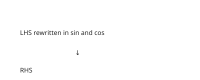

Based on Cambridge International AS & A Level Mathematics: Pure Mathematics 2 & 3 Coursebook, Chapter 3, printed pp.66-67 (further trigonometric identities). Printed pages were read from P23.pdf (printed 66-67 = PDF 78-79). Own wording and new numbers. This short subsection has no new Key point formula: identities are proved by rewriting both sides in sines and cosines, or by using a compound-angle or double-angle formula already met.
A typical proof starts from the more complicated side, replaces each reciprocal or quotient by sines and cosines, and uses a double-angle formula to reach the other side. Every step must be an identity (true for all admissible values), not an equation that is being solved.

Book: proving identities, printed pp.66-67. New special-angle check only, to stay within integer values.
Find the value of \(2\operatorname{cosec} 90^\circ\tan 45^\circ\).
Book: proving identities, printed pp.66-67. New special-angle numbers.
Find the value of \(\sec^2 60^\circ\).
Find the value of \(2\operatorname{cosec} 90^\circ\tan 45^\circ\).
\(2\)
Find the value of \(\sec^2 60^\circ\).
\(4\)
Find the value of \(\sec^2 45^\circ\).
\(2\)
9709/21/M/J/15 Question 6(i) only, 3 marks. Official QP and official MS. Part (ii) is omitted. The question number was checked against the official QP.
Prove that \(2\operatorname{cosec} 2\theta\tan\theta\equiv\sec^2\theta\). [3]